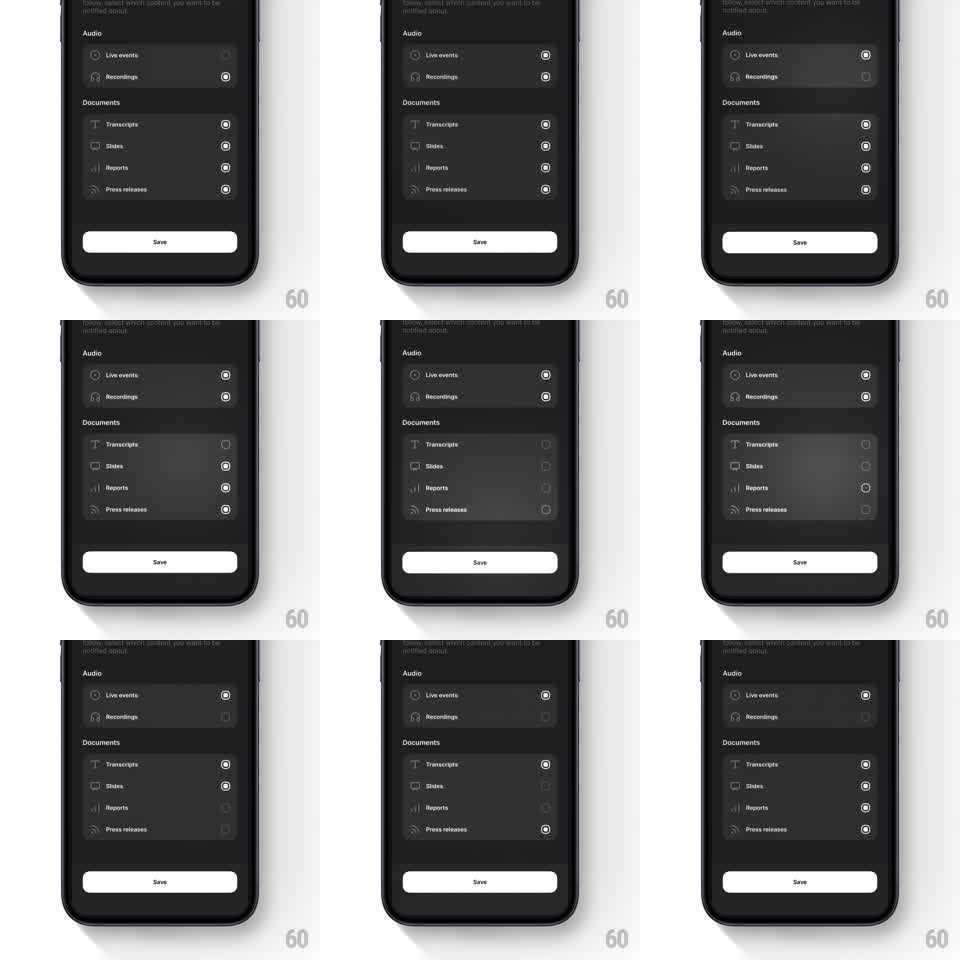

Media
Frame-by-frame

Rebuild this interaction 1:1: Quartr's notification preferences - circular toggles on a glassmorphic sheet that pulse with an organic, liquid scale-and-spring when tapped, row by row.

Rebuild this interaction 1:1: Quartr's notification preferences - circular toggles on a glassmorphic sheet that pulse with an organic, liquid scale-and-spring when tapped, row by row.
## Integration
Integration: stack-agnostic spec - springs given as stiffness/damping, timed motions as duration + curve; map every value to your framework and animation library of choice.
## Scene
Quartr preferences sheet, dark glass: header copy ("Below, select which content you want to be notified about"), an "Audio" section (Live events, Recordings) and a "Documents" section (Transcripts, Slides, Reports, Press releases) - each row an icon, label, and a circular checkbox at right - plus a white "Save" button at the bottom.
## Motion spec
Pattern: liquid-glass pulse on selection toggles.
- Tap a row's circle: the circle squashes (scale 0.85) then springs to a filled checked state (spring ~550/14, one visible overshoot to ~1.2) with the checkmark drawing in (stroke draw, 150ms).
- The row's glass background ripples with the toggle: brightness lifts ~8% and back (250ms), like a pulse traveling through the card.
- The whole row does a barely-there scale breath (1 -> 1.015 -> 1, 200ms) - organic, never mechanical.
- Untoggling reverses with the same spring but the checkmark fades instead of drawing (120ms).
- Rows respond to taps anywhere on the row, but the liquid pulse centers on the circle.
- The Save button brightens from 60% to full opacity the moment any selection changes (200ms) - a quiet dirty-state signal.
## Calibration
- Checked = filled light circle with a dark check; unchecked = thin grey ring. No middle states.
- Multiple rows can be toggled rapidly - each pulse is independent and never cancels another.
## Reduced motion
Circle fills and checkmark appear with a 150ms crossfade; no squash, ripple, or breath.
## Don't miss
- The glass rows keep their blur and hairline borders through every pulse.
- Section headers (Audio / Documents) are static labels - they never animate.